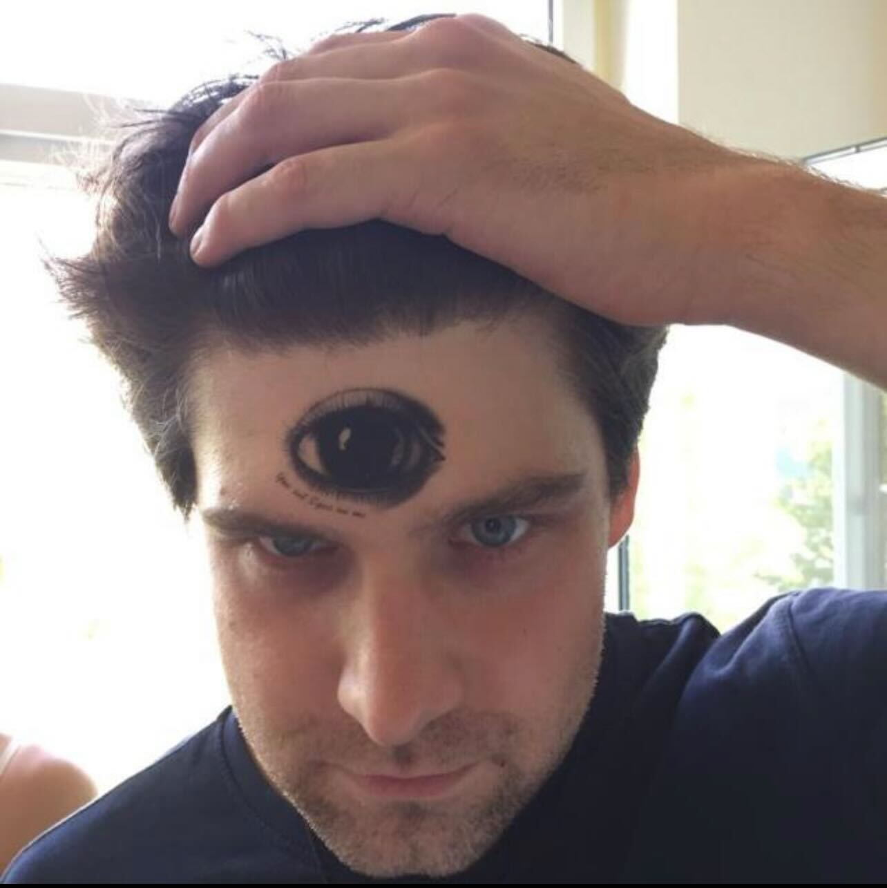
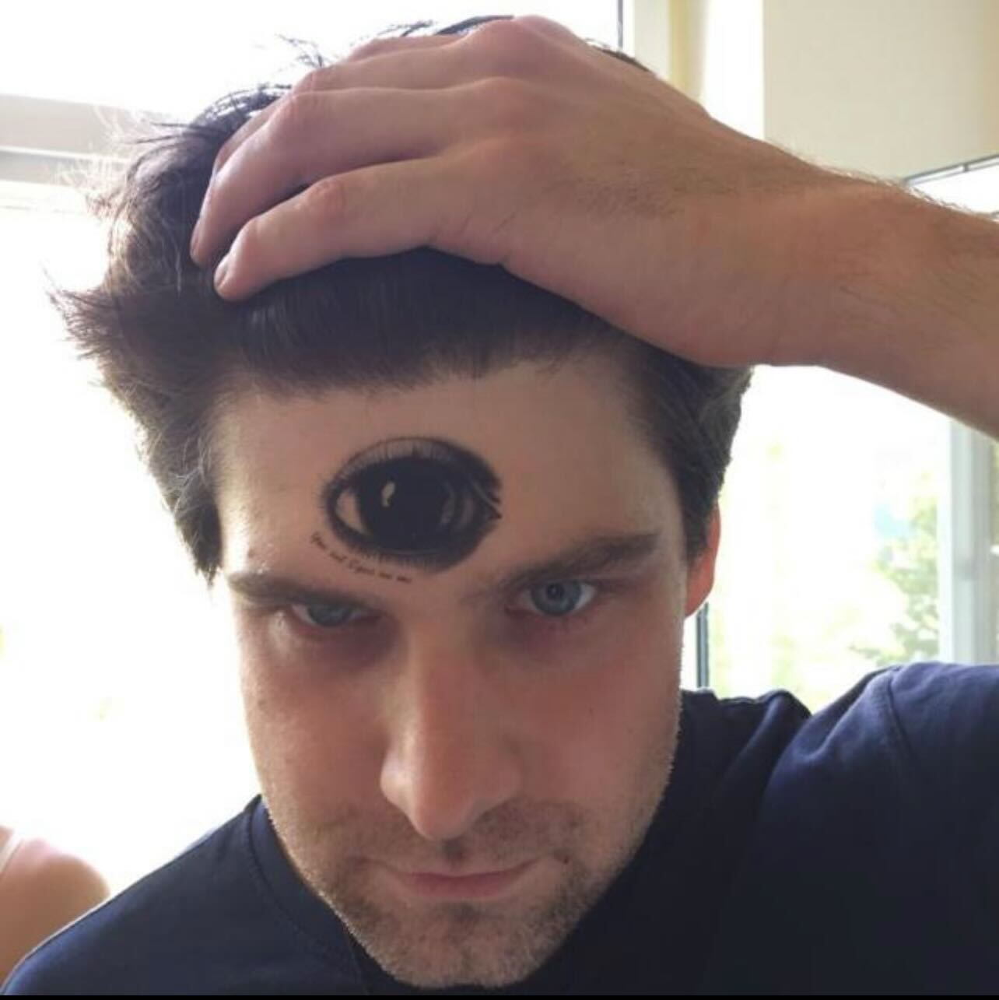

Schon Appetit bekommen? Probieren sie unser Gutes gelingen wünschen ihnen
Kevin Funck
Jens Labudda
 Sebastian Rieder
Sebastian Rieder
Bei uns findet ihr allerhand Rezepte für ein gemütliches
Beisammensein an einem feurig knisterndem Lagerfeuer.
Von Feuertopf und Kesselgulasch
über Glut Cooking und Garen am offenen Feuer
bis zu leckerem Stockbrot und Pfannengerichten.
Bei uns finden Sie bestimmt das Richtige!
Unsere Rezepte sind leicht verständlich erklärt,
an Personen-Anzahlen anpassbar
und ganz einfach an Ihrem Lagerfeuer nachzukochen.
Alles für Ihre Feierlichkeit, den Camping Ausflug oder für
die gemütliche Zweisamkeit unter Sternenhimmel.
Schon Appetit bekommen? Probieren sie unser Gutes gelingen wünschen ihnen
Kevin Funck
Jens Labudda
Sebastian Rieder